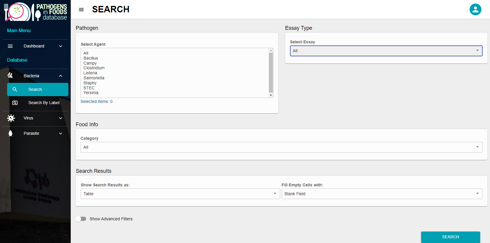

4 Contamination data

Investigations addressing the identification and quantification of biological hazards in foods surveyed at various stages in the farm-to-fork chain is essential for building QMRA models. These data are primarily intended to be used as input data of the exposure assessment module but they can also be used as way to validate some output of the modelling approach (e.g. data observed at retail level could be used to validate the output of a model simulating the contamination along the farm to fork framework).
4.1 EFSA-ECDC zoonoses report
4.1.1 Scope
The European Union (EU) has been collecting for more than 20 years data on zoonoses that integrate their occurrence in food, animals and feed (together with the information from human cases see) . The data collection system also covers antimicrobial resistance. Member states (MS) and non-Member State (non-MS) European Free Trade Association (EFTA) countries submitted data a Data were submitted electronically to the EFSA zoonoses database, through EFSA’s Data Collection Framework (DCF) (European Food Safety Authority (EFSA), Amore, et al. 2022; European Food Safety Authority (EFSA), Boelaert, et al. 2022).
4.1.2 Accessibility
Overview tables (and or graphs) presenting all the countries that reported data during a five year time-frame are made available, with key summary statistics. These summary statistics only focus on official sampling. Thus they are taking into account other reported data:
from industry own-control programmes,
data from suspect sampling, selective sampling,
or data associated to outbreak or clinical investigations.
insert: https://zenodo.org/record/5761142#.YvTdGHZBy70 (how to get data from dashbord)
4.2 Pathogens-in-Foods database
4.2.1 Scope
Pathogens-in-Foods (PIF) is a database constructed upon systematic literature searches of occurrence data (prevalence and enumeration) of important pathogenic agents (insert ref Sofia). The database considers:
bacterial hazards: Bacillus cereus, Campylobacter spp., Clostridium perfringens, Listeria monocytogenes, Salmonella spp., Shiga toxin-producing Escherichia coli, Staphylococcus aureus, Yersinia enterocolitica
parasites: Cryptosporidium spp., Giardia spp., Toxoplasma gondii,
and viruses: Hepatitis A virus, Hepatitis E virus and Norovirus
Presently (August 2022), the PIF database includes 1153 primary studies, with over 5200 bacteria, 200 virus, and 40 parasite entries spanning data published from 2000 on-wards to the present day. Systematic reviews are conducted periodically to ensure that new data is continuously added, and the database is kept up to date.
4.2.2 Accessibility
PIF is accessible through the main page at https://fsqa.esa.ipb.pt/. There are two different ways to access data. A Shiny app is provided in order to explore the database https://fsqa.esa.ipb.pt/shiny/apps/. PIF can be also accessed through the “Access System” (an email should be provided to log in).
Several variables for exploring the database of contamination can be defined. In the first section the pathogen of interest, the nature of data (prevalence, enumeration) the food characteristics can be filtered (see Figure 4.1).

Through advanced filters, further features such as country of food origin, StudyID, label, packaging status, sampling stage, method used, can be included in the search. The results can be presented as a table in the database interface or downloaded as CVS or JSON format files.